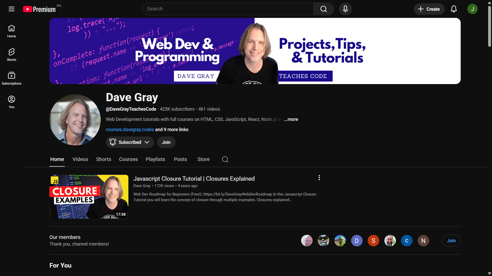

Development Notes and Learning Resources
I'm focused on mastering web development fundamentals. This site documents what I learn, how I apply it, and how I refine my skills through practice.
Currently, I'm exploring how different HTML tags and CSS properties behave. I review HTML and CSS tutorials, then experiment during quiet hours to stay focused and reinforce what I learn.
Resources That Shape My Workflow
-
Dave Gray's tutorials simplify complex topics into clear, actionable steps that make learning feel approachable and practical.

Dave Gray simplifies complex topics into approachable coding tutorials -
freeCodeCamp offers structured challenges that keep me engaged and focused on building real-world skills. To support their mission, donations by check can be sent to:
freeCodeCamp, Inc.
3905 Hedgcoxe Rd
PO Box 250352
Plano, TX 75025freeCodeCamp offers structured challenges that build real-world coding skills
Key Challenges and Concepts I'm Practicing
- Head Elements
- Setting up metadata, titles, and essential page info for browsers and search engines.
- Text Basics
- Using headings, paragraphs, and emphasis to create clear, readable content. Progress over perfection.
- List Types
- Choosing between unordered, ordered, and description lists to structure information meaningfully.
- Floats
-
Using floats to position elements beside each other, and containing them with
display: flow-rootto manage layout flow without clearfix. - Columns
-
Creating multi-column layouts with
column-countand related properties for readable, responsive text blocks. - JavaScript Foundations
-
Working with data types, string and number methods, type conversion, method chaining, and the
Mathobject to generate dynamic output.